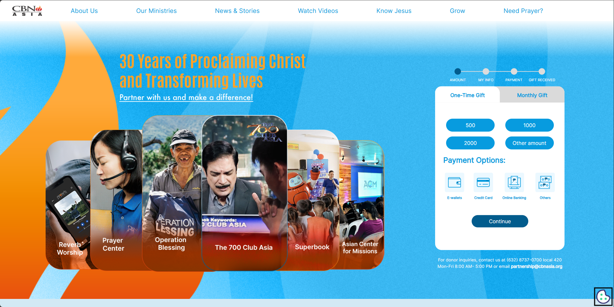
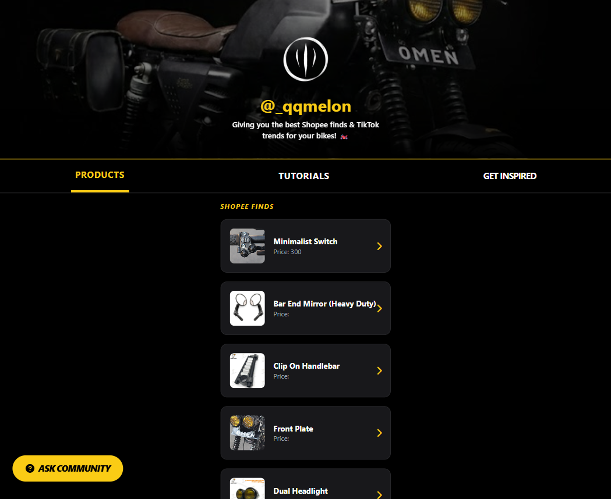
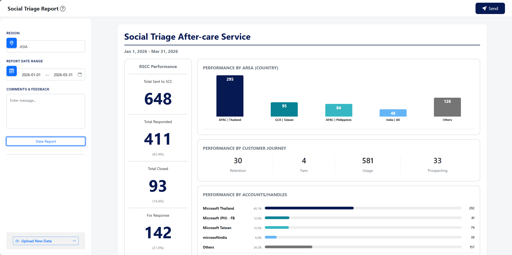
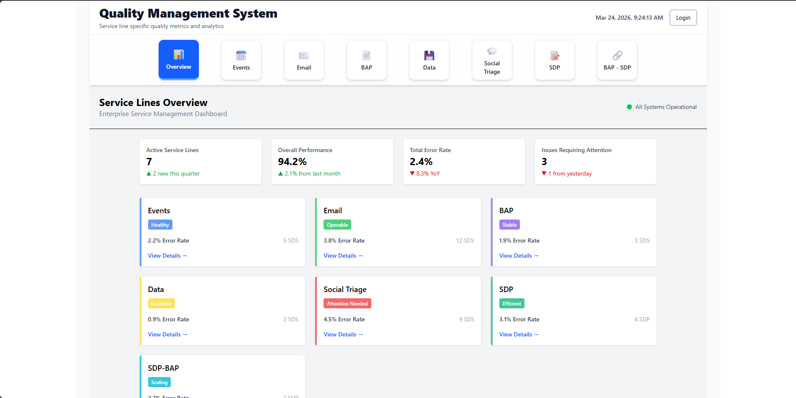
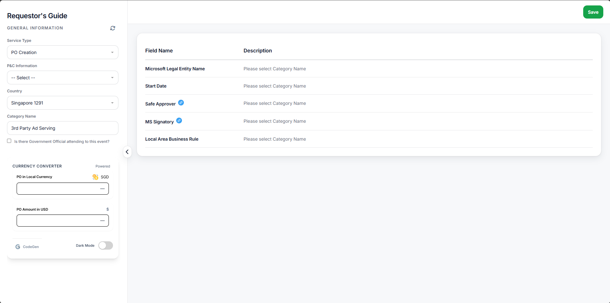
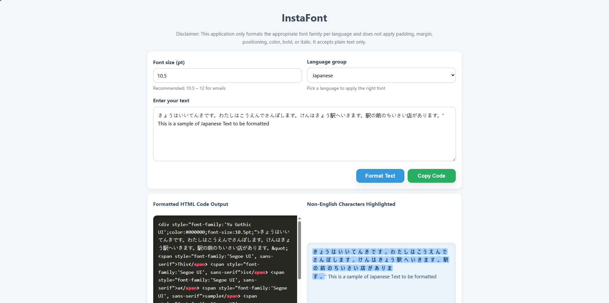
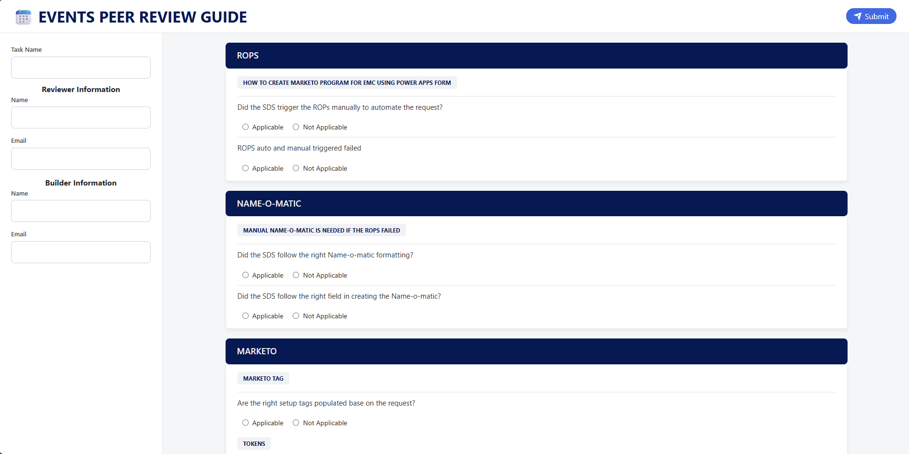
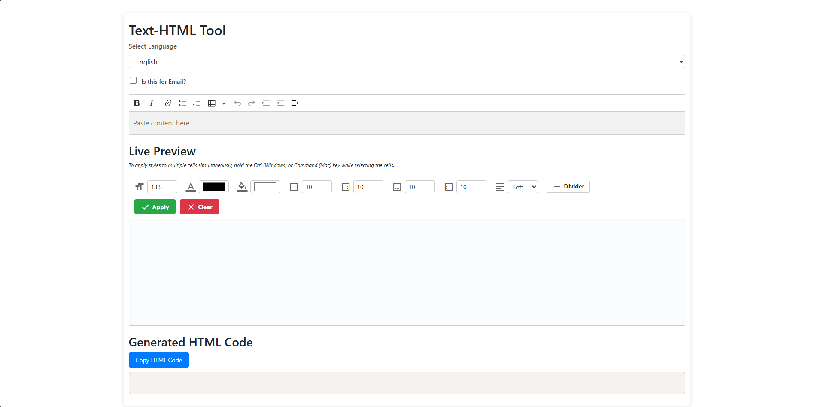

Hello!
I bridge the gap between technical development and marketing strategy to build high-performing, automated digital experiences.
CBN Asia Donation Page

An integrated philanthropic portal that serves as the primary conduit for resource mobilization across various ministry initiatives. The platform provides transparent visibility into various giving channels, allowing users to direct their support toward specific social and spiritual outreach programs with operational efficiency.
A curated digital ecosystem for motorcycle enthusiasts that integrates a specialized affiliate marketplace with technical instructional content. The platform features detailed build showcases and step-by-step installation guides, supported by a community-driven Q&A framework to ensure seamless customization and optimal vehicle performance.
Personal Affiliate Website

Social Triage Report Generator

A specialized data processing engine that automates the creation of tracking and monitoring reports. By pulling raw social data into a structured format, it allows stakeholders to easily visualize engagement trends and response metrics. *Developed as an internal innovation to optimize social media operations.
A high-level analytical platform that visualizes Quality Management System (QMS) performance and operational KPIs. It provides real-time visibility into service health, allowing teams to identify bottlenecks and maintain peak operational standards. *Built as a core performance tracking utility for enterprise-level quality assurance.
QUALITY MANAGEMENT SYSTEM

Requestor Guide

A strategic documentation tool aimed at optimizing the project intake process. It guides stakeholders through providing complete and accurate submission details, effectively reducing the "back-and-forth" during the briefing stage. *Created to streamline cross-departmental project workflows and technical briefing.
A robust front-end automation tool designed to transform raw text into formatted code according to predefined logic and architectural standards. It ensures that every output remains consistent with brand guidelines without manual intervention. *Developed as a front-end automation engine for large-scale content deployment.
InstaFont

Peer Review Guide

A comprehensive framework designed to standardize the quality assurance process. It provides a structured roadmap for reviewers to verify technical accuracy, ensuring that all assets meet a "zero-error" gold standard. *Established as the official technical QA roadmap for campaign production.
An efficiency-focused utility that automates the conversion of plain-text content into clean, production-ready HTML code. This tool eliminates syntax errors and accelerates the development phase of web layouts. *Engineered to reduce manual coding hours and improve production-ready accuracy.
Text-to-HTML

I am a Software Developer and Email Marketing Specialist with a degree in Computer Science, driven by a passion for building things from the ground up—whether it’s a high-performing digital campaign or a custom engine. My professional background is rooted in technical precision, where I maintain a focus on 100% error-free production standards using tools like Marketo and Adobe Experience Manager (AEM).
Outside of the digital world, my creativity shifts to the garage. I have a deep love for classic motorcycle customization, where I focus on aesthetic modifications. For me, building a website and modifying a bike share the same DNA: it’s all about taking a raw concept and refining every detail until it’s both functional and a work of art.